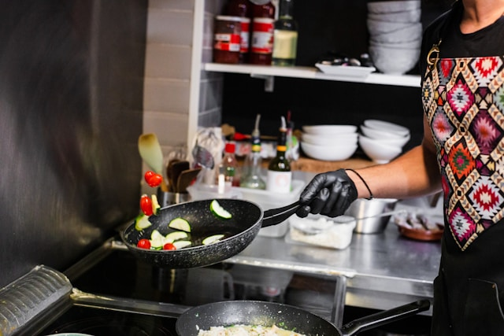

SuperMercado Verde
Volver a las recetas
Productos
Ofertas
Contacto
Wok de frutas y verduras
Un delicioso y saludable plato, combinando lo mejor de las frutas y verduras en un wok

Ingredientes
1 zanahoria
1 pimiento rojo
1 calabacín
1 taza de brócoli
1 manzana verde
1 pera
Aceite de oliva o de sésamo
Salsa de soja
Miel o azúcar (opcional)
Jengibre fresco rallado (opcional)
Sal y pimienta al gusto
Instrucciones
Corta todas las verduras y frutas en tiras o trozos pequeños
Calienta el aceite de oliva o de sésamo en un wok grande a fuego medio-alto
Agrega las verduras (zanahoria, pimiento, calabacín, brócoli) y saltea durante unos 5 minutos, hasta que estén ligeramente tiernas pero crujientes
Agrega las frutas (manzana y pera) y cocina por 3-4 minutos, permitiendo que se caramelicen ligeramente
Incorpora un poco de salsa de soja, miel o azúcar al gusto y jengibre rallado si lo deseas para un toque extra de sabor
Salpica con sal y pimienta, mezcla bien todos los ingredientes y cocina durante 1-2 minutos más
Sirve caliente y disfruta de un wok de frutas y verduras lleno de sabor y nutrientes
Comentarios y valoraciones
Enviar
María:
¡Una receta increíble! La combinación de frutas con las verduras le da un toque delicioso
Carlos:
Me encantó. Perfecto para una comida ligera pero llena de sabor
Comentario recibido
Gracias por tu comentario. ¡Pronto lo publicaremos!